Radiology research forum is a long-running lecture series held approximately every two weeks at our Center.
The forum rotates among lectures by distinguished visiting researchers, presentations by partners involved in Collaborative Projects with our faculty, and research reports by scientists from the radiology department at NYU Langone Health, which operates our Center.
Many of the lectures comprise the Seminar in Biomedical Imaging (BMSC-GA 4416), part of the Biomedical Imaging and Technology PhD Training Program.
Upcoming and most recent lectures are shown first.
On-site seminars are held on the 4th floor at 660 First Avenue, unless otherwise noted. For seminars held via Webex, Zoom, and Microsoft Teams, guests from outside our Center may request an invitation link by reaching out to Rania Assas.
Date: April 22, 2026, at noon
Location: Translational Research Building, 1st Floor, Room 120 (227 E 30th Street)
Associate Professor
Department of Neurology
Wayne State University School of Medicine
Director
MR Core Research Facility
Wayne State University School of Medicine
Susceptibility-weighted imaging (SWI) and quantitative susceptibility mapping (QSM) enable noninvasive assessment of cerebral oxygen saturation, microvascular abnormalities, and iron deposition in the brain, providing valuable insights into neurological disorders such as multiple sclerosis and dementia. This lecture will review QSM-based methods for quantifying venous oxygen saturation and introduce a high-resolution susceptibility MRI method at 3T, achieving 200-µm in-plane resolution in vivo. This approach enables simultaneous evaluation of oxygenation, small-vessel morphometry, and iron deposition in superficial white matter (U-fibers), offering complementary biomarkers to elucidate vascular and metabolic contributions to cognitive impairment.
Date: April 16, 2026, at noon
Location: Translational Research Building, 1st Floor, Room 718 (227 E 30th Street)
Distinguished Professor in Advanced Imaging
Margaret Hart Surbeck
Kennedy Krieger Institute
Vice Chair for Research, Co-executive Director
Department of Radiology and Biomedical Imaging
Center for Intelligent Imaging
Emerging artificial intelligence methods applied to quantitative musculoskeletal imaging—across the imaging cycle, from image acquisition, reconstruction, feature extraction and disease trajectory modeling—will be presented. In this talk we will focus on imaging methods related to imaging degenerative joint disease and chronic lower back pain. The focus will be specifically on tissues like cartilage, meniscus, muscle, bone, disc, etcetera. We will focus on relating the quantitative tissue imaging to function, pain, skeletal biomechanics, movement changes, therapy and treatment trajectories. The clinical deployment of these AI methods and will be discussed.
Date: April 15, 2026, at noon
Location: Translational Research Building, 1st Floor, Seminar Room 120 (227 E 30th Street)
Research Scientist
F.M. Kirby Research Center for Functional Brain Imaging
Kennedy Krieger Institute
Diffusion-weighted imaging (DWI) has become a key tool for probing renal microstructure, yet conventional approaches provide only limited specificity in capturing the complex interplay of vascular, tubular, and tissue compartments in the kidney. In this talk, I will present recent advances in multi-dimensional diffusion MRI that move beyond standard single-parameter diffusion measurements.
Specifically, I will highlight ongoing work focused on spectral diffusion analysis of intravoxel incoherent motion MRI, which resolves multiple distinct diffusion components without prior assumptions about their number. In parallel, I will present the development and in vivo evaluation of two-dimensional T2 intravoxel incoherent motion (IVIM) imaging in the abdomen, focusing on recent work that introduces a joint b value–echo time modeling framework for simultaneous estimation of IVIM parameters and compartmental T2 values. In addition, I will discuss magnetization transfer-prepared DWI as a complementary approach to enhance sensitivity to macromolecular content and tissue microstructure.
Together, these techniques provide a more detailed, multi-contrast characterization of renal tissue, creating new opportunities to disentangle vascular, tubular, and parenchymal contributions and to improve the specificity of diffusion MRI metrics to microstructural and microcirculatory changes in health and disease. The potential of these methods for advancing noninvasive assessment of renal structure and function will be highlighted.
Date: April 13, 2026, at noon
Location: Translational Research Building, 1st Floor, Seminar Room 120 (227 E 30th Street)
Postdoctoral Researcher
Martinos Center for Biomedical Imaging and Massachusetts General Hospital (MGH)
In this talk, I will describe our efforts to accelerate the processing of magnetic resonance spectroscopic imaging (MRSI) and enable on-scanner reconstruction. I will begin with a brief introduction on MRSI, which includes developments that range from single-voxel spectroscopy to whole brain MRSI. I will also explain the current long processing times of more than 10 hours and inconsistent image quality that limit the clinical application of conventional MRSI pipelines. To solve this problem, we have developed three deep learning models for suppression of nuisance signal (from water and lipids), removal of undersampling artifacts, and quantification of metabolites. I will explain how these problems are addressed by conventional algorithms and what the limitations of these approaches are, and present our deep learning–based solutions. By incorporating these models into a deep learning–enhanced MRSI pipeline, we were able to reduce processing times to about 7 minutes and improve MRSI image quality. With help from Siemens Healthineers, we were able to deploy our pipeline onto the scanner, allowing for fast and robust on-scanner MRSI acquisition and reconstruction.
Date: April 1, 2026, at noon
Location: Translational Research Building, 1st Floor, Seminar Room 120 (227 E 30th Street)
Assistant Professor
Harvard Medical School
Pancreatic ductal adenocarcinoma (PDAC) is difficult to distinguish from benign inflammatory conditions with current diagnostic techniques, motivating a functional imaging strategy that interrogates pancreatic secretory biology rather than relying on tumor conspicuity. This presentation describes Zn-MRI, which combines zinc-sensitive probes with exogenous secretagogue stimulation (glucose, caerulein, secretin, or a cocktail) to provoke zinc release and map the resulting T1-weighted signal changes. In an orthotopic PDAC model, stimulated enhancement is prominent in tumor-bearing pancreas but not in acute or chronic pancreatitis, supporting malignancy specificity. The approach is further positioned as a therapy-monitoring and surveillance tool: Zn-MRI detects response to KRASG12D inhibitor treatment within ~3–5 days and identifies recurrence ~1–3 days after treatment withdrawal. Human relevance is supported by elevated zinc transporter expression in malignant and cancer-associated pancreatitis-like tissue and by ex vivo evidence of secretagogue-evoked zinc flux in precision-cut human pancreatic slices.
Date: March 26, 2026, at 10:30am
Location: 60 Fifth Ave, Room 650
PhD Data Science Candidate
New York University
Knee osteoarthritis (OA) is a highly prevalent degenerative joint disease and a major cause of disability and healthcare utilization worldwide. While imaging is central to OA assessment, predicting long-term outcomes and disease progression remains challenging due to heterogeneous trajectories, scarcity of longitudinal labels, and distribution shifts between curated research cohorts and real-world clinical data. This dissertation investigates machine learning methods to improve long-horizon risk prediction in knee OA and to develop modeling principles that also transfer to other diseases and data modalities.
The research is presented through five key contributions.
Together, these contributions provide practical, task-aligned methods for building robust, generalizable, and maintainable risk prediction models from medical imaging and clinical records.
Date: March 25, 2026, at noon
Location: Translational Research Building, 1st Floor, Seminar Room 120 (227 E 30th Street)
Assistant Professor
Radiology
Harvard Medical School
Assistant Professor
Radiology
Harvard Medical School
Fuyixue Wang(speaker 1) Advanced MRI Acquisition for Mapping Human Brain and Body Structure and Function This talk will present our recent developments in next-generation MRI acquisition technologies, designed for both clinical and high-performance scanner systems, to improve sensitivity, specificity, and spatiotemporal resolution for imaging the human brain and body across both neuroscientific and clinical applications. We will begin with diffusion MRI, where our technologies enable fast, high-resolution dMRI, achieving unprecedented resolution and image performance. We now achieve whole-brain in vivo dMRI at mesoscopic scales (<500 μm isotropic) on both clinical 3T/7T scanners and advanced platforms such as Connectome 2.0, resolving fine-scale brain connectivity in both health and disease. These technologies also allow for ultra-high b-value imaging with rich multi-echo information, enabling advanced microstructural characterization for new biomarker identification. Recently, we extend these capabilities beyond the brain to the body, enabling fast high-resolution distortion-free diffusion imaging across major organs, including whole abdominopelvic DWI at 1.5-mm isotropic resolution within 10 minutes. We then present advances in functional MRI along two key directions. First, we focus on precision functional mapping that is essential for clinical translation. Our approaches improve functional sensitivity and reproducibility by enhancing time-series fidelity and enabling multi-echo–based denoising—our methods have now been widely adopted worldwide with a growing user community of over 200 researchers across 70 institutions. The second direction aims to improve neuronal specificity through novel acquisition strategies that achieve unprecedented spatiotemporal resolution (e.g., 0.1 μL voxels or 150 ms temporal resolution) and contrasts more tightly linked to neuronal processes. These advances enable new investigations of mesoscale functional organization (e.g., laminar and columnar) and ultrafast brain dynamics. Finally, we will briefly introduce our efforts to accelerate clinical translation and enable scalable deployment of advanced MRI technologies through the development of acquisition frameworks on vendor-neutral platforms (e.g., Pulseq, Gadgetron) integrated with cloud-based high-performance computing.
Zijing Dong (speaker 2) Advanced MRI Acquisition for Brain-wide CSF Flow Mapping and Multiparametric Quantitative Imaging The first part of the talk will focus on our recent developments and findings in mapping brain-wide cerebrospinal fluid (CSF) flow. CSF plays a critical role in waste clearance, as suggested by the glymphatic theory and drainage theory through arachnoid granulations. However, our understanding of CSF dynamics in humans remains limited, largely due to the lack of tools capable of quantifying extremely slow flows (e.g., ~100 µm/s). We will present novel acquisition and processing methods that enable quantitative mapping of slow CSF flow with both velocity and directional information, allowing comprehensive characterization of brain-wide flow patterns—from the ventricles to the previously inaccessible subarachnoid space. We will further discuss our investigations into the driving forces of CSF flow in the subarachnoid space, including cardiac pulsation, respiration, and neural activity, and how these mechanisms shape its spatiotemporal dynamics. Finally, we will present our recent findings that reveal complex yet highly organized brain-wide CSF pathways, providing the first comprehensive in vivo view of CSF circulation across the human brain.
The second part of the talk will focus on multiparametric quantitative MRI. While quantitative MRI enables specific and reproducible measurements of tissue properties, its application has been limited by long scan times and sensitivity to motion. We will introduce our development of highly efficient acquisition techniques that enable up to 10× faster imaging while achieving high spatial resolution—for example, whole-brain T1, T2, T2*, and B0/B1 mapping at 1-mm isotropic resolution within 3 minutes. We will also present strategies that ensure high accuracy and robustness even under substantial subject motion, and the integration with MR spectroscopy for combined metabolic and quantitative imaging in glioma patients. Finally, we further extended this framework to myelin water imaging, demonstrating the first submillimeter whole-brain myelin water mapping at 7T that enables in vivo mapping of fine cortical myeloarchitecture, as well as to metabolic CEST imaging for rapid, snapshot quantification of metabolites.
Date: March 18, 2026, at noon
Location: Translational Research Building, 1st Floor, Seminar Room 120 (227 E 30th Street)
Assistant Professor
Department of Radiology
NYU Grossman School of Medicine
The brain's organization spans multiple spatial scales, from cellular architecture to large-scale networks, yet understanding how these levels connect remains a critical gap in neuroscience. Our lab bridges cellular and systems-level neurobiology across development and aging using advanced MRI, spatial transcriptomics, and nonhuman primate models. In this talk, I will present work that integrates cross-scale imaging with molecular data to understand how primate brain networks form and change across the lifespan. Using examples from studies of prenatal Zika virus exposure and lifespan cortical transcriptomics, I will illustrate how combining imaging and molecular approaches reveals organizational principles of the brain and identifies critical developmental windows of vulnerability. This multi-scale framework has direct implications for understanding how environmental insults, developmental perturbations, and aging affect brain structure and function, with applications to clinical conditions including neurodevelopmental and neurodegenerative diseases.
Date: February 18, 2026, at noon
Location: Translational Research Building, 1st Floor, Seminar Room 120 (227 E 30th Street)
Assistant Professor
Radiology
Icahn School of Medicine at Mount Sinai
This talk will contain two parts.The first part will cover quantitative myelin imaging, with a focus on specificity of existing methods and potential advantages of solid-state MRI. Magnetization transfer (MT) and myelin water imaging (MWI) are widely used indirect myelin imaging methods that can infer myelin concentration via the interaction between water and myelin. Interaction with myelin, however, is not the only phenomenon affecting water 1H signal; this signal is affected by a host of biophysical phenomena, including inflammation, edema, and axonal destruction, impairing the specificity of these indirect methods to myelin concentration, as well as chemical fixation in postmortem tissues. There is therefore a pressing need for quantitative imaging methods that are both sensitive and highly specific. Solid-state MRI methods, such as ultra-short echo-time (UTE) and zero echo-time (ZTE), can image the extremely short T2 myelin 1H signal and provide a direct measurement of myelin concentration, largely unbiased by effects modulating water 1H signal. I will cover work to quantify the specificity of quantitative myelin MRI methods to biases introduced by fixation, and the potential benefits of solid-state MRI methods.
The second part will cover the combination of ex vivo whole-brain MRI and image-guided histopathology. The integration of MRI and neuropathology can combine the sensitivity of whole-brain MRI with the specificity and detail of histopathology. This renders the unification of MRI and histopathology for mechanistic investigation of injuries and diseases affecting the brain more effective than the sum of the two methods in isolation. Ex vivo MRI can also serve as a bridge between the detailed mechanistic information available through histopathology, and potential imaging-based biomarkers detectable in vivo. I will cover the progress we have made in developing and applying whole-brain MRI and histopathology methods and workflows for the study of traumatic brain injury, COVID-19 and neurological post-acute sequelae of COVID-19, and fundamental neuroanatomy.
Date: February 17, 2026, at noon
Location: Translational Research Building, 1st Floor, Seminar Room 120 (227 E 30th Street)
Professor
Diagnostic, Molecular and Interventional Radiology, Neuroscience
Endowed Professor
Engineering Medicine
Icahn School of Medicine
The talk will describe my journey as an engineer in medical research and how my training in electrical engineering built the foundation for an independent research program focused on the design and translation of novel neuroimaging technologies to meet clinical unmet needs in neurology, neurosurgery, and psychiatry. I will then describe my vision to develop a more focused research and educational hub in the field of engineering medicine and will share my experience building up the New York City-based Center for Engineering and Precision Medicine (CEPM), the first joint center between Icahn School of Medicine at Mount Sinai and Rensselaer Polytechnic Institute.
Date: February 11, 2026, at noon
Location: Translational Research Building, 1st Floor, Seminar Room 120 (227 E 30th Street)
Professor and Associate Chair
Faculty Mentoring in the Radiology and Biomedical Imaging
Co-chair
UCSF/UC Berkeley Graduate Group in Bioengineering
Janine Lupo, PhD, is a Professor and Associate Chair of Faculty Mentoring in the Radiology and Biomedical Imaging, and co-chair of UCSF/UC Berkeley Graduate Group in Bioengineering. She received her BSE in Bioengineering at the University of Pennsylvania, School of Engineering and Applied Science in Philadelphia before completing her PhD at the UCSF/UCB Joint Graduate Program in Bioengineering. Her current research focuses on the development and application of novel MR imaging processing and analysis techniques for incorporating physiologic and metabolic MR imaging into AI-based models for the evaluation of patients with brain tumors. This includes leveraging deep learning approaches to predict underlying biological characteristics from pathology, the migration of tumor cells leading to progression, and prognosis from metabolic and physiologic MRI, with the ultimate goal of incorporating these tools into routine patient management.

Researchers at the Center for Biomedical Imaging at NYU Langone Health develop transformative imaging technologies to advance basic science and address unsolved clinical problems.
660 First Avenue
4th Floor
New York, NY 10016